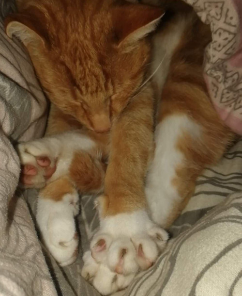

These gorgeous paws need
some attention!

In order for him to feel appreciated,
the nails need to be taken care of.
Here below I provide you with the most
important functions of these
bones so you understand that they are
critical for our lovely pets
- killing mice
- killing birds
- killing frogs
- killing
Just so you know, we do have ways to maintain
them properly. You must just follow these 4
steps.
- Cut them often in a "V" shape so blood
of the innocent can drip off freely.
- Spend at least 1.5 hours every day polishing
the nails so they are nice and shiny.
- Give your puppy something to practice on.
For example-your face.
- Lay the red carpet in front of the cat
every time it wants to enter and exit the house.
back